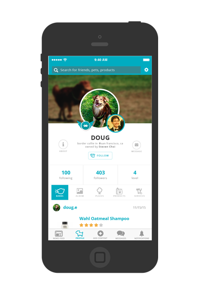

Welcome
Projects
Contact
Resume
Hanna Lee
Developer
UX Designer
Art Enthusiast
Statewide Database
Redesign of the website experience and branding for the redistricting database of the State of California.

Spetcial
Logo and UI/UX design from scratch for a mobile application for pet owners that features a Yelp-like database and a social media platform.
Theta Tau
A collection of apparel and flyers for Theta Tau, a professional engineering fraternity.
Haas
Various design work including logos and posterboards for UC Berkeley’s Haas Alumni Relations.